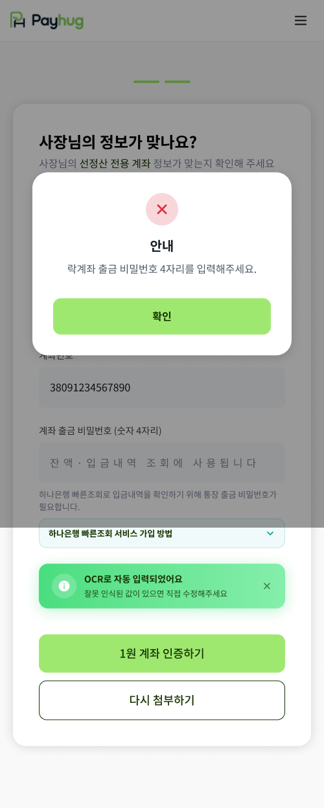

PART 2 · 가입에서 선정산 개시까지
16
락계좌 정보 확인 —
출금 비밀번호 4자리
가 필요합니다
「비밀번호를 왜 알려줘야 하냐」는 질문에 바로 답할 수 있어야 하는 화면입니다

1
은행과 계좌번호는 통장 사진에서 자동으로 채워집니다
앞 화면에서 올린 통장 사진을 읽어 값을 넣어 둡니다. 사장님은 숫자가 맞는지만 봐 주시면 됩니다.
2
하나은행 계좌만 등록됩니다
선정산 전용 계좌(락계좌)는 하나은행에서만 만들 수 있습니다. 다른 은행 통장을 올리시면 여기서 등록되지 않으니, 주거래 은행이 따로 있는 사장님께는 미리 말씀드리세요.
3
비밀번호는 입금내역을 조회하는 데 씁니다
화면에 적힌 그대로입니다. 하나은행 빠른조회로 입금내역을 확인하려면 통장 출금 비밀번호가 필요합니다. 입력칸에도
「잔액·입금내역 조회에 사용됩니다」
라고 쓰여 있습니다. 돈을 빼가는 용도가 아니라는 걸 이 문구로 보여드리세요.
4
빼먹으면 지금 보시는 안내 팝업이 뜹니다
이 화면이 바로 비밀번호를 안 넣고 넘어가려 한 상태입니다. 「확인」을 누르고 4자리를 채워야 아래 「1원 계좌 인증하기」로 넘어갑니다.
화면 안에 「하나은행 빠른조회 서비스 가입 방법」이 접힌 채로 들어 있습니다. 이 가입은 사장님이 하나은행에서 직접 하셔야 하고, 안 되어 있으면 뒤 단계가 막힙니다.
가맹점 앱 · 계약 STEP6-1 락계좌 정보 확인 화면
pay
hug